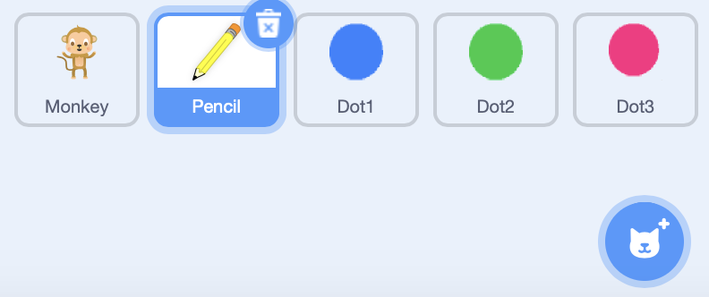
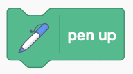
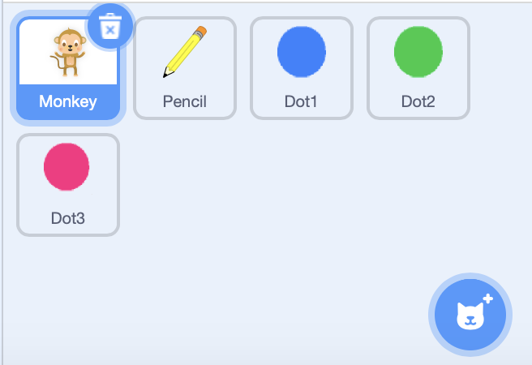
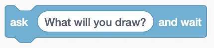
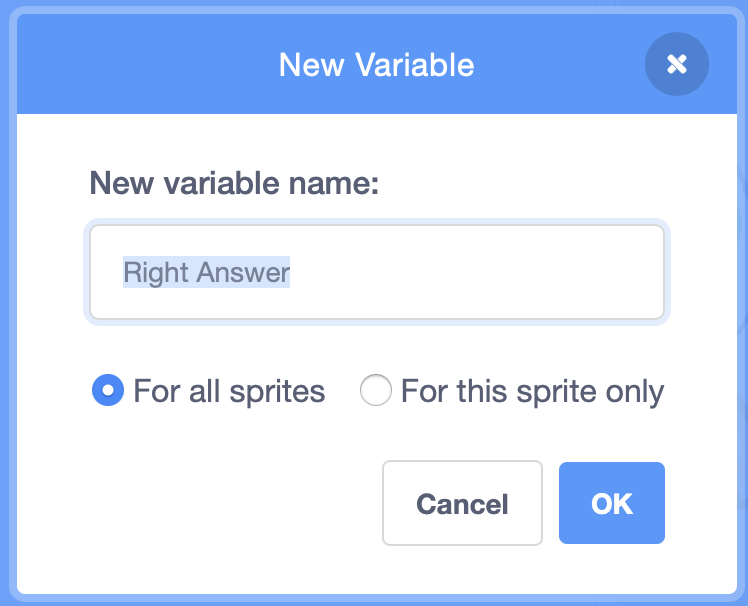
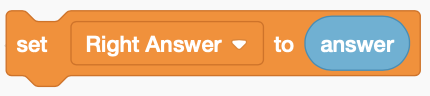
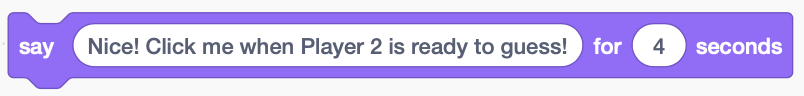

In this codelab, you'll learn how to make a pictionary-like game.
What you'll learn
- Use pen blocks to draw on the canvas.
- Use variables to store information.
- Use ask blocks to get user input.
- Review conditional (if/else) blocks.
Open the starter project and click Remix.
First, let's program the pencil to draw.
Challenges
- Program the pencil to follow the mousepointer.
- Make the pencil draw.
- Clear the canvas when the green flag is clicked.

You may have noticed that the pencil draws whenever it moves. Let's make the game more user-friendly by only drawing when the mouse is held down.
Challenges
- If the mouse button is pressed, make the pencil draw.
- If the mouse button is not pressed, make the pencil stop drawing.

Now, we want to ask Player 1 what she will draw. We are going to use a variable to store the correct answer.
Challenges
- When the green flag is clicked, make the monkey ask "What will you draw?"

 - Create a variable called
Right Answer.
 - Save the user's
answerusing theRight Answervariable.
 - Make the monkey send a confirmation message.

We want Player 2 to guess what Player 1 drew. If Player 2 guesses correctly, show a victory message!
Challenges
- When the monkey is clicked, make it ask "What do you think the drawing is?"
- If the answer is correct, show a victory message. If the answer is wrong, show a Try Again message.

You have made a pictionary game on Scratch.
What we've covered
- Use pen blocks to draw on the canvas.
- Use variables to store information.
- Use ask blocks to get user input.
- Review conditional (if/else) blocks.